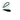

| 2012/07 20 Fri | 181回目*marika |
いつも読んでくださってる方、
初めて読んでくださった方、
コメントしてくださった方、
ありがとうございます＊
まりかです

浪漫の撮影とLessonでした。
今日は暑過ぎてびっくりした
 ...
...
...
外にいること多かったから
溶けるかと思ったよーーーーーーー
あちかったああああ
ひーひーふー
みなさんも塩分しっかりとって
夏バテしないようにしましょう><

*****
まりっかもてもて
真ん中のやつすんごうぇええぐぇ
な顔してるけど
まりっか

あ、うしろに誰かいるわね

...そーかそーかんーんー
若月も私のことそんなにすきなのか。
*****
東スポの連載は私です

取材のときだらだら
しゃべってしまって最強に
まとまりのない話だったのに
読んだらこんなにまとまってて...

まりかに少しでも、ほんの少しでも
もうちょびっとでも
興味がある方はちょーとでも
読んでいただけると嬉しいです。
まりかふぁむのみなさんも読んでね

生駒に
「ピーマンとナスとか
普通に食べれるしっ」
とか言われたぐわわわ
おしりぺんぺんしてやったよ笑
みんなにバカにされる私
 ちーん
ちーん
ちーん
愛称が「ベビたん」のままだった

けど、まりっか
*****

ねねがくつろいでるところ
かまってあげてるんだよ

やさしいだろ ⁇
明日Lesson頑張ろう。
みなさんも頑張りまりか‼
まりか
コメント(116)
2012/07/20 00:54